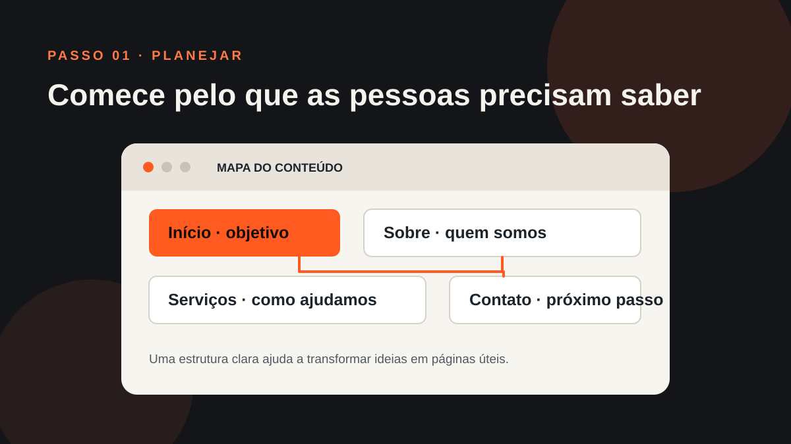
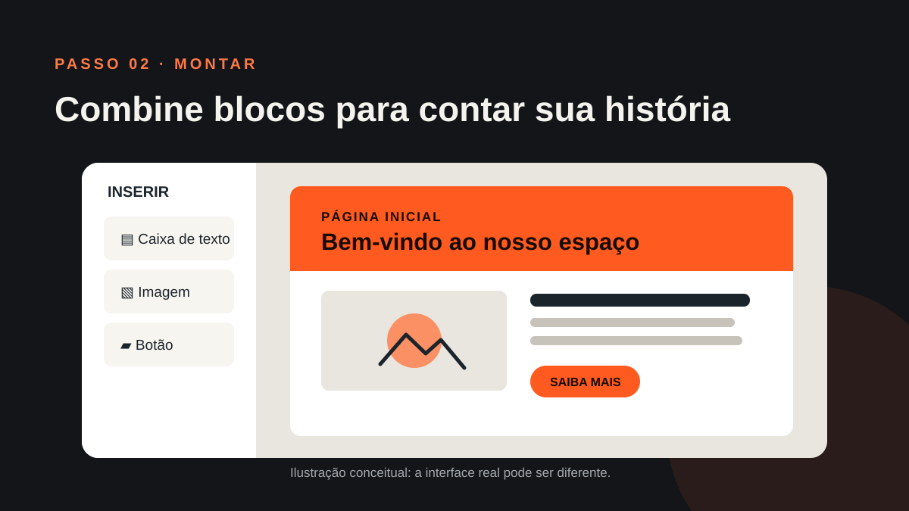
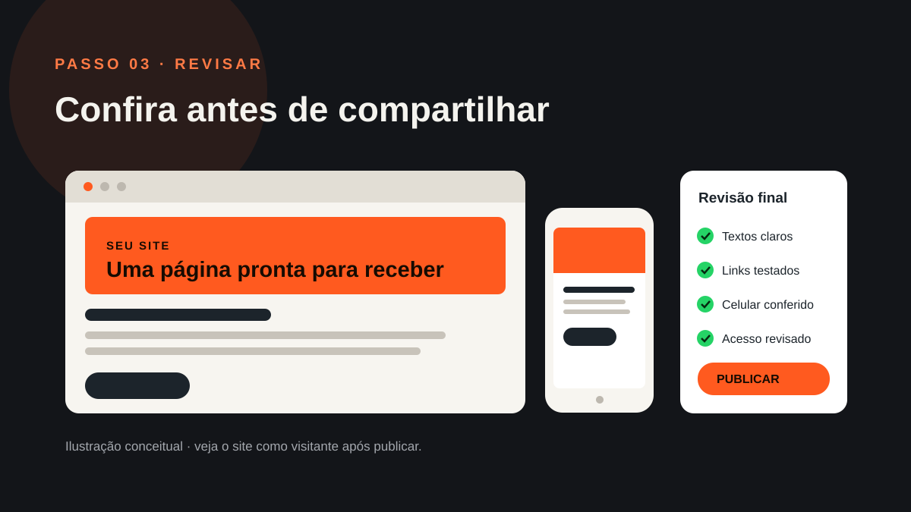

Criação de sites · Tutorial
Como criar um site no Google Sites: passo a passo para começar
Quer montar uma página simples para apresentar seu projeto, serviço ou negócio? Neste guia, você vai conhecer o Google Sites e aprender a criar, organizar, revisar e publicar seu primeiro site.
O Google Sites é uma ferramenta do Google para criar páginas na internet usando um editor visual. Você escolhe um modelo, insere textos, imagens e outros conteúdos e organiza tudo sem precisar escrever código.
Ele pode ser útil para projetos simples, portfólios, materiais de equipe e páginas informativas. A ferramenta não substitui todas as soluções de criação de sites, então vale entender o que você precisa antes de escolher.
O que é o Google Sites?
Imagine montar uma apresentação, mas em formato de site: você adiciona blocos de conteúdo, cria páginas e organiza os links de navegação. O Google Sites cuida da estrutura técnica básica e permite visualizar o resultado em diferentes tamanhos de tela.
Para começar, você precisa de uma Conta Google e de um navegador no computador. Os nomes e a posição de alguns comandos podem mudar conforme as atualizações da ferramenta.

Antes de começar: organize suas ideias
Um pouco de planejamento deixa a montagem mais fácil. Anote:
- qual é o objetivo da página;
- quem você quer que a visite;
- quais informações são indispensáveis;
- qual ação a pessoa deve realizar, como enviar uma mensagem ou consultar um serviço.
Para uma apresentação simples, por exemplo, você pode começar com “Início”, “Sobre”, “Serviços” e “Contato”. Um projeto menor pode funcionar bem com uma única página e seções organizadas.
Como criar um site no Google Sites
1. Abra o Google Sites e escolha como começar
Acesse sites.google.com com sua Conta Google. Na tela inicial, escolha um modelo pronto ou comece com um site em branco. O modelo oferece uma estrutura inicial; você pode adaptar textos, imagens e páginas.
2. Dê um nome ao site
No editor, informe o nome do arquivo do site e o título que aparecerá para quem visitar a página. Use um nome fácil de reconhecer. Se for um negócio, normalmente faz sentido usar o nome pelo qual as pessoas já conhecem a empresa.
3. Escolha um tema e ajuste o cabeçalho
Abra a área de temas para selecionar uma combinação de cores e fontes. Depois, clique no cabeçalho para trocar a imagem ou o estilo e edite o título. Prefira texto legível e uma imagem relacionada ao conteúdo.
4. Adicione textos, imagens e botões
Na aba de inserção, você encontra caixas de texto, imagens, botões e blocos de layout. Clique no elemento ou arraste-o para a página. Mantenha cada seção focada em uma informação e escreva títulos que ajudem a pessoa a entender o conteúdo rapidamente.
Ao adicionar imagens, escolha arquivos nítidos e relacionados ao assunto. Inclua texto alternativo quando a ferramenta oferecer essa opção, para explicar a imagem a quem usa leitor de tela.

5. Crie e organize as páginas
Abra a aba “Páginas” para adicionar páginas novas. Dê nomes curtos e claros, como “Sobre” ou “Contato”. Você também pode reorganizar a ordem e criar subpáginas. A navegação deve ajudar a pessoa a chegar ao que procura sem adivinhar.
6. Adicione links e confira os destinos
Selecione um texto, imagem ou botão para inserir um link para outra página ou endereço. Depois, confira cada link: um botão de contato deve abrir o canal correto, e os links do menu devem levar às páginas esperadas.
7. Visualize o site antes de publicar
Use a opção de pré-visualização para conferir como o site aparece em computador, tablet e celular. Leia os textos, teste os links e veja se as imagens estão bem enquadradas. Essa revisão evita publicar uma página incompleta ou difícil de usar.

Como publicar seu site
Quando estiver pronto, clique em Publicar. Escolha o endereço disponível para o site e revise quem poderá acessá-lo. As opções podem variar conforme as configurações da sua conta, especialmente em contas de trabalho ou escola. Se a intenção é que qualquer pessoa visite, confira cuidadosamente a opção de visibilidade antes de concluir.
O Google Sites salva as alterações enquanto você trabalha, mas isso não significa que elas já estejam públicas. A publicação é a etapa que disponibiliza uma versão para visitantes. Depois de publicar, abra o endereço em uma janela separada e confira o resultado como visitante.
Não publique dados pessoais ou informações internas por engano. Revise o conteúdo e as permissões de acesso antes de compartilhar o link.
O que considerar antes de escolher o Google Sites
O Google Sites pode ser um começo prático quando você precisa de uma presença digital simples. Ainda assim, avalie se a ferramenta oferece os recursos de que o projeto precisa, como controle de design, integrações, recursos avançados de marketing e possibilidades de otimização para mecanismos de busca.
Um site também depende de conteúdo claro, boa navegação e informações confiáveis. Ter uma página publicada, por si só, não garante que ela apareça em destaque nos resultados de busca ou gere contatos.
Resumo rápido
- Defina o objetivo e organize o conteúdo.
- Abra o Google Sites e escolha um modelo ou página em branco.
- Adicione textos, imagens, páginas e links.
- Revise a navegação e visualize em diferentes telas.
- Publique quando estiver pronto e confira as permissões de acesso.
Para as instruções mais recentes, consulte a Central de Ajuda oficial do Google Sites. A interface e os recursos podem mudar com o tempo.